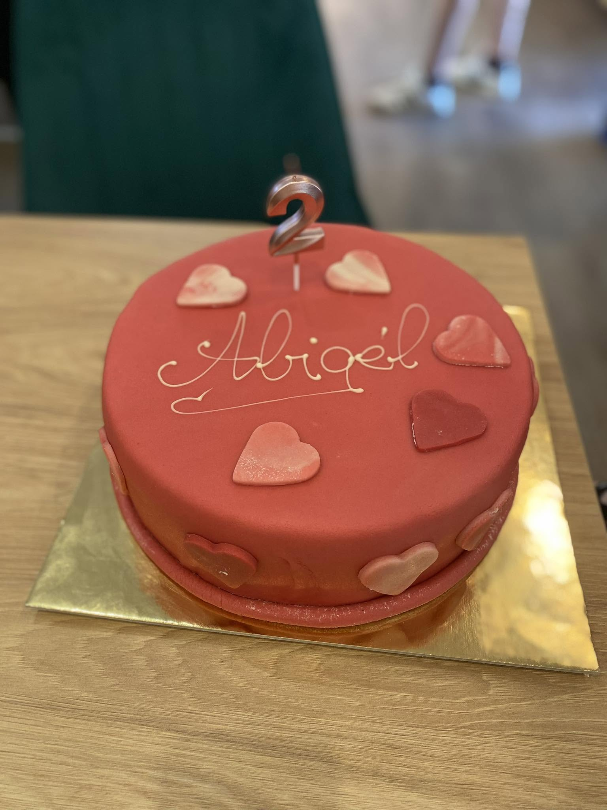
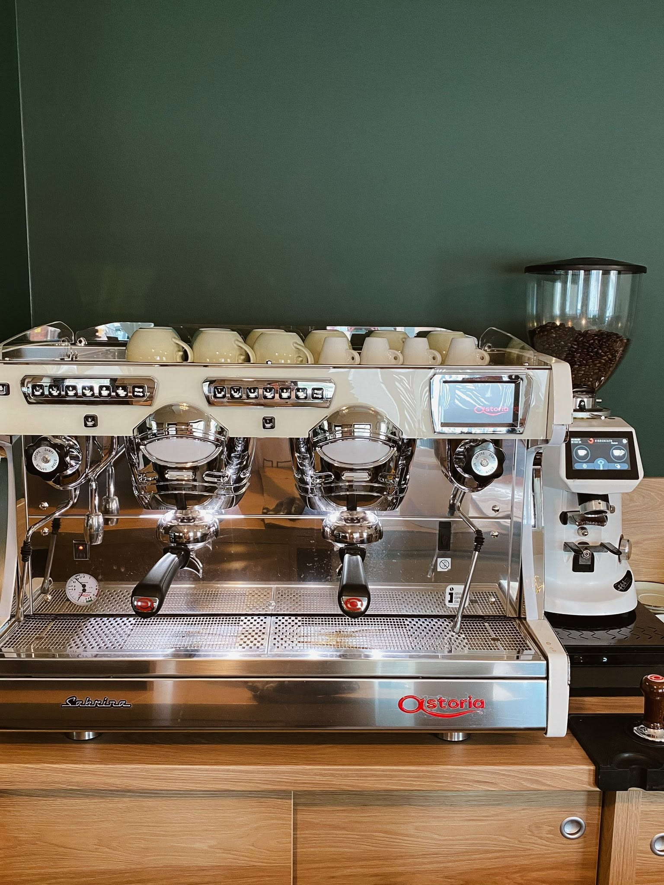
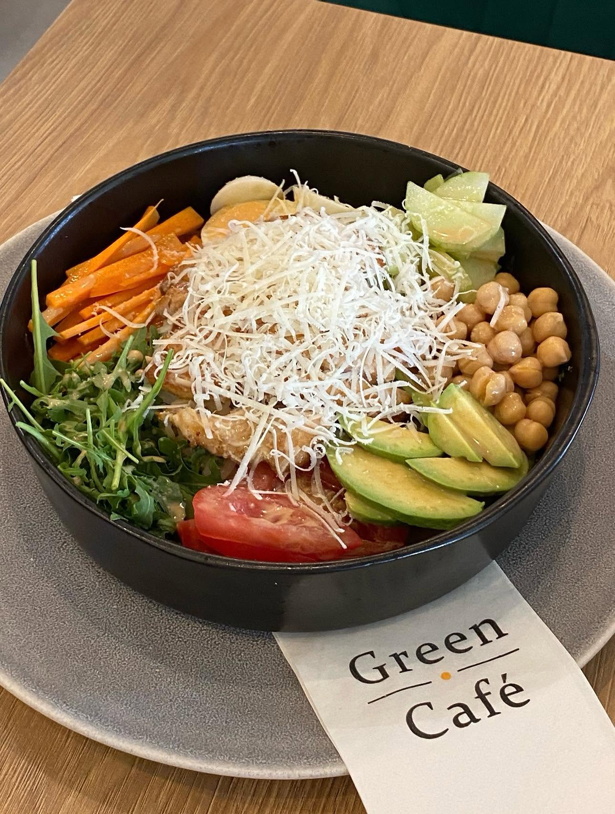
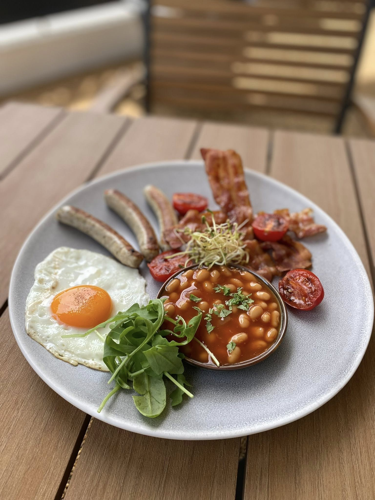
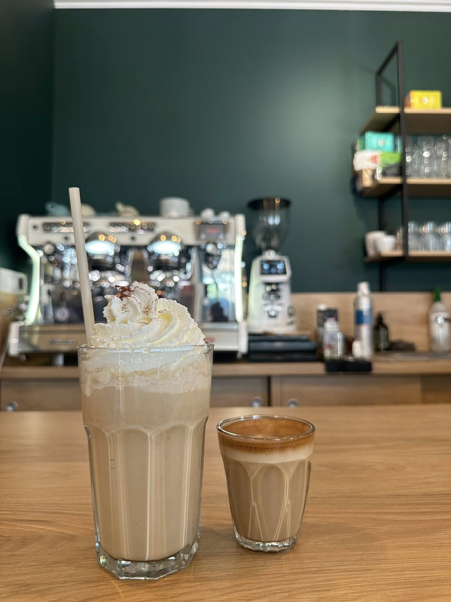
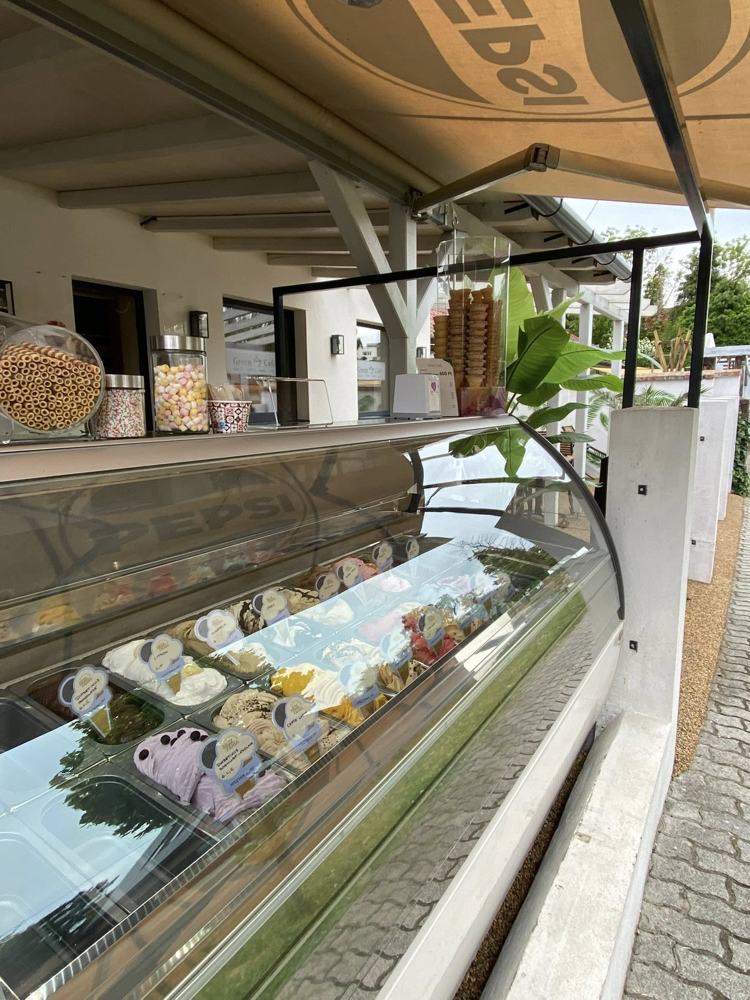
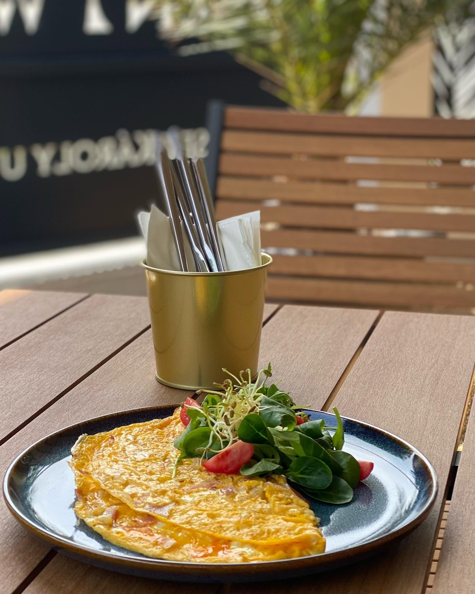

A Green Café Siófok szívében várja vendégeit reggelitől brunchon át délutáni kávéig. Prémium eszpresszó géppel készített italok, friss pékáruk, kézzel készített torták és olasz gelato – minden nap, csak neked.
Nyitva tartunk minden nap 08:00 – 20:00, hogy legyen hova menni a reggeli induláshoz vagy a délutáni pihenőhöz.







Vécsey Károly utca 11.
8600 Siófok
Minden nap
08:00 – 20:00